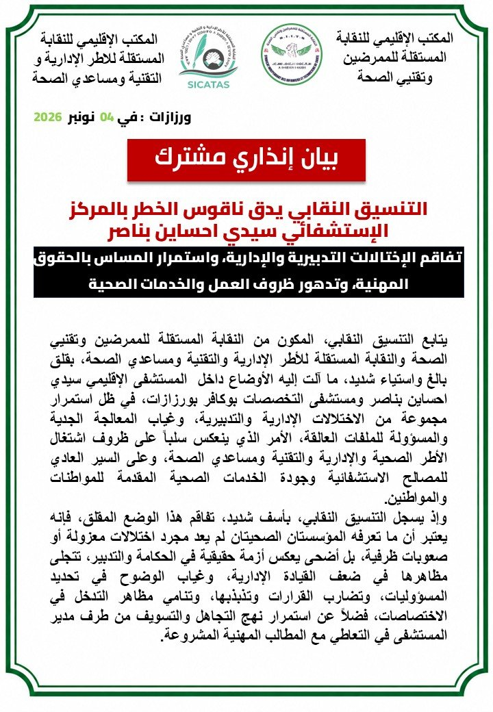

بيان إنذاري مشترك: التنسيق النقابي يدق ناقوس الخطر بالمركز الاستشفائي سيدي احساين بناصر بورزازات

أصدر التنسيق النقابي بورزازات، المكون من المكتب الإقليمي للنقابة المستقلة للممرضين وتقنيي الصحة والمكتب الإقليمي للنقابة المستقلة للأطر الإدارية والتقنية ومساعدي الصحة، يوم 4 نونبر 2026 بياناً إنذارياً مشتركاً يدق فيه ناقوس الخطر بشأن الأوضاع داخل المستشفى الإقليمي سيدي احساين بناصر ومستشفى التخصصات بوكافر بورزازات.
ويسجل البيان تفاقم الاختلالات الإدارية والتدبيرية، واستمرار غياب حوار اجتماعي جاد ومسؤول، والمساس باستقلالية القرار الإداري، وارتباك اتخاذ القرارات، وتداخل الاختصاصات في تدبير تداريب طلبة المعهد العالي للمهن التمريضية وتقنيات الصحة، والتأخر في صرف تعويضات الحراسة والإلزامية والمداومة عن 2025 و2026.
كما يندد بالتماطل في تعيين رئيس قطب العلاجات التمريضية، وسوء تدبير الموارد البشرية، والتوزيع غير العادل للسكن الوظيفي، وتعطيل تفعيل مصلحة المساعدة الطبية المستعجلة (SAMU)، والوضعية المتردية لمقر المختبر، وتردي خدمات المطبخ والتغذية، والاختلالات في تدبير الأدوية والأجهزة الطبية، وإطالة فترات انتظار المرضى.
وأمام هذه الأوضاع، يعلن التنسيق النقابي عن تنظيم وقفة احتجاجية إنذارية أمام المستشفى الإقليمي سيدي احساين بناصر يوم الخميس 12 نونبر 2026 على الساعة 11 صباحاً، ويهيب بكافة الممرضات والممرضين وتقنيي الصحة والأطر الإدارية والتقنية ومساعدي الصحة إلى التكتل ورص الصفوف والانخراط المكثف في هذه المحطة النضالية.
«لقد استُنفدت لغة المراسلات والاجتماعات... فالكرامة المهنية ليست امتيازاً، والحقوق ليست مطالب قابلة للتأجيل، وتحمل المسؤولية لم يعد خياراً بل واجباً».
فتح في تطبيق النقابة